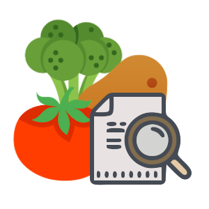
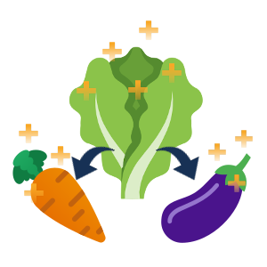

Crop Info
Learn specific growth requirements for the crops you want to grow.
Learn

Companion Planting
Find what plants work best when planted together.
Expand
Growing Plan
Create a growing plan with all the information you need for your garden.
Plan